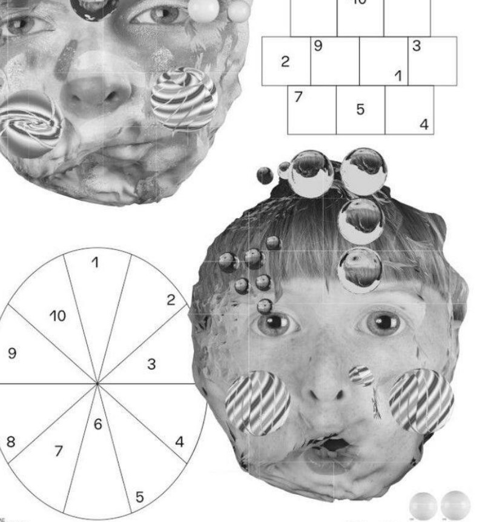
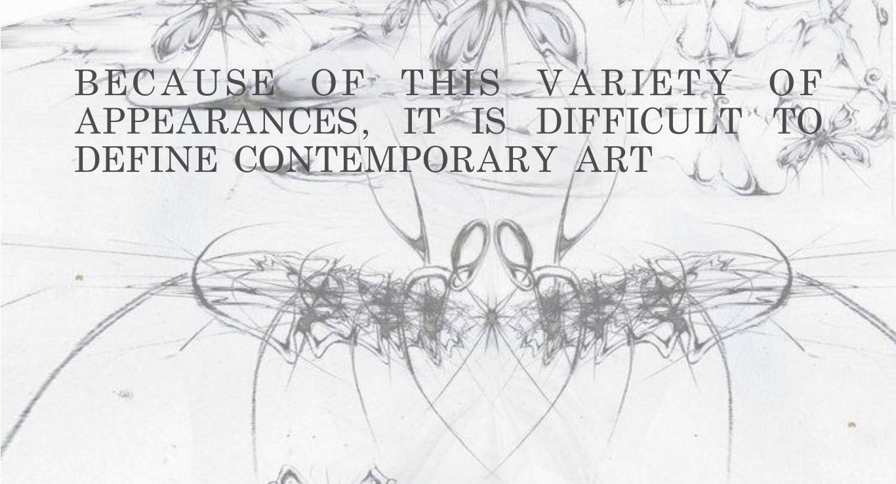

Визначення та Характеристики
Сучасне мистецтво є складним та різноманітним терміном, який описує мистецтво, що створюється з другої половини 20-го століття до сьогодні. Відмінною рисою сучасного мистецтва є новаторство, експерименти з техніками, матеріалами та концепціями.
Мистецтво є вираженням думок та емоцій через візуальні засоби.
"Мистецтво починається там, де закінчується природа." — Едгар Дега
Сучасне мистецтво має безліч стилів та напрямків, таких як абстракціонізм, мінімалізм, постмодернізм та багато інших. Художники цього періоду кинули виклик традиційним уявленням про мистецтво та його межі.
Головні Напрямки
Серед найважливіших напрямків сучасного мистецтва можна виокремити такі:
- Абстракціонізм
- Поп-арт
- Концептуальне мистецтво
- Інсталяція
- Мінімалізм
Кожен з цих напрямків розвивався як відповідь на соціальні та політичні події, нові технології та зміни у світі. Художники використовували нові медіа, фотографію, відео, комп'ютерну графіку для створення унікальних творів.
Відомі Художники
Деякі з найвизначніших митців сучасності:
- Енді Воргол — засновник поп-арту
- Джексон Поллок — представник абстрактного експресіонізму
- Йозеф Бойс — концептуальне мистецтво та перформанс
- Марина Абрамович — перформанс та інтерактивне мистецтво
- Джефф Кунс — постмодернізм та скульптура
Значення та Вплив
Сучасне мистецтво має значний вплив на культуру та суспільство. Воно допомагає нам осмислювати сучасні проблеми, такі як глобалізація, екологія, технології та соціальна справедливість. Мистецтво сприяє діалогу між різними культурами та поколіннями.